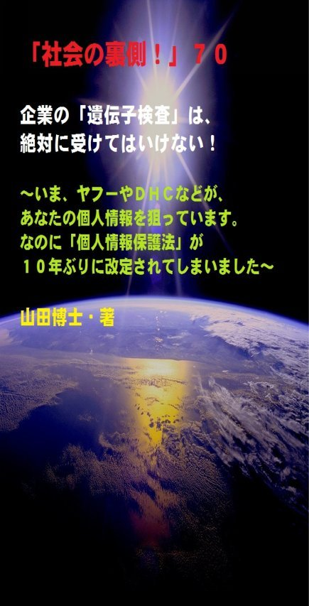

| 「社会の裏側！」７０......企業の「遺伝子検査」は、絶対に受けてはいけない！: いま、ヤフーやＤＨＣなどが、あなたの個人情報を狙っています。なのに「個人情報保護法」が１０年ぶりに改定されてしまいました | |
| 山田博士 | |
| kominitesyuppankai (2017) | |

■「社会の裏側！」７０
企業の「遺伝子検査」は、絶対に受けてはいけない！
～いま、ヤフーやＤＨＣなどが、あなたの個人情報を狙っています。なのに「個人情報保護法」が１０年ぶりに改定されてしまいました～
The social backside70
山田博士・著
★本書の著作権について
皆さんにはまったく関係ないことだと思いますが、複写、転送、抜粋、転載など、著作権侵害にあたる行為は絶対になさらないで下さい。本書の著作権は、山田博士にあります。今後、皆さんのお役に立ちたい活動が出来なくなりますので、その点、ぜひよろしくお願いします。ささささ、それでは、本書をどうぞ、ごゆっくりご覧下さい。
★概要
最近、ネットで仕事をしていると、「遺伝子検査」という言葉が、なんとも頻繁（ひんぱん）に出てきます。
遺伝子検査で、適したダイエット食。
寿命も分かる？ 遺伝子検査キット。
ガンや生活習慣病などの病気発症リスクや、体質の遺伝的傾向を知ることができる......。
とまあ、このような感じの文言（もんごん）が、あちらこちらで踊っております。
ところが、じつは......。
２０１３年１１月、アメリカのＦＤＡ（アメリカ食品医薬品局）は、ある企業に対して、遺伝子検査キットの出荷停止命令を下しました。
あまり、日本では報道されなかったのですが、こうした事実も、ぜひ知っておいてほしい。
Googl e の共同創業者セルゲイ・ブリン氏の妻が 、 Googl e の出資を受けて立ち上げた 「 23andM e 」という企業があります。
この企業が、遺伝子情報を分析することで、難病など特定の疾病（しっぺい）の発症リスクを早期に発見できるというサービスＰＧＳ （ Personal Genome Servic e 」を提供していたのですが、そこに問題が生じました。
このＰＧＳというのは、利用者宅に遺伝子検査キットを送付して、利用者が唾液を採取してキットを返送します。
そうすれば、この企業が検査を実施して、完了後にメールで通知するというものなんですね。
この検査キットによって検査できる遺伝子項目は、肢帯（したい）型筋ジストロフィーや糖原病 (I 型 ・ I I 型)などの難病のキャリア状態 ( Carrier Statu s )が全５０項目。
それに、カフェイン代謝 やC 型肝炎の治療に対する反応などの薬物応答 ( Drug Respons e )が全５０項目。
また、アルコール依存症やアルツハイマー病などさまざまなんですが、問題は、これらの情報がどのように企業に使われるのか。
事実、このＰＧＳを利用し、間違って難病発症リスクが高いという結果を提示されたと主張する人も現れました。
これでは、人生が大変なことになってしまいます。
でも、一番の問題は、こうして集められた「遺伝子という大切な個人情報」。
個人にとって一番大切な情報が、見も知らない他人（企業）たちによって、さまざまに利用されるような時代が、いまぼくたちの目の前に......到来しております。
今回、そのあたりを分かりやすく述べてみました。
でも日本では、なぜか、世界の動きに逆行しているかのようですね。
なぜなら、ある法律が......。
まままま、どうぞ、ご覧下さい。
★目次
★（第１章）
アメリカのＦＤＡは、ある企業に対して、遺伝子検査キットの出荷停止命令を下しました。このことは、あまり日本では報道されなかったのですが、なぜだと思います？......
★（第２章）
それに、「マイナンバー法」改正により、行政機関が国民の預貯金口座や特定健康診査（メタボ健診）などの管理に、このマイナンバーを利用できるようになります。あなたの口座に、どれだけの資金が入っているのか、ガラス張りになるわけですね......
★（第３章）
驚いて下さい。個人情報を含む国民の公的年金業務を進める日本年金機構の全職員２万１９７４人のうち、何と５割強が「非正規雇用」だと言うわけですね。しかも、しょっちゅう入れ替わっている。これで大事な「個人情報」を管理できますか。つまり......
★「社会の裏側！」シリーズの既刊本案内
★プロフィール
（最初に、恥ずかしながら、ぼくの紹介を簡単に述べておきます）
やまだ・ひろし。
１９４７年、福井県小浜（おばま）市生まれ。
食生態学者。元大学名誉教授。日本危機管理学会会員。
山田博士いのち研究所主宰。
ベトナム戦争の終わったちょうどその年１９７５年に、マンガストーリィと商品の実名で食べものや環境を取り上げた小冊子「暮しの赤信号」を発行する。実名で取り上げたため、社会に衝撃を与えた。各号１０万部単位で読まれ、隠れたベストセラーなどと、新聞などで何度も報道される。
同じ年、偶然にも有吉佐和子さんの「複合汚染」が発表され、この小冊子はその動きも受けて多くの学校の副読本でも活用された。
文化放送の「なっちゃこワイド」や、ＮＨＫ海外放送「ある日本人」でお話しをしたり、ギター弾き語り公演や、各自治体や学校などへの講演なども続けている。
現在は、メルマガ「暮しの赤信号」（「短縮版」と「完全版」の２種）を発行し、企業名や商品名などを公表して、世界中のかたに喜ばれている。
その読者層は、医師や看護師、栄養士、教師、会社経営者、自治体など、国の内外を問わず、多くの読者たちから毎日のように便りが届いている。年齢層も、１０代から８０代まで、さまざまだ。
また、ほぼ毎月第３土曜日に、東京の恵比寿でお茶飲み会「博々亭（ひろびろてい）」を開催。遠路から毎回読者が駆けて来ている。参加条件はメルマガ読者に限定だが、参加費用は無料だ。
このメルマガは、まぐまぐ！を始め３つのスタンドの合計で、数千部発行しているが、もしご関心のあるかたは、ご覧いただくと嬉しい。読者登録をされれば、毎回、無料でお手元に届く。月～水は本誌が、木～日は『３分で分かる！今週のワンショット「暮しの赤信号」』が、それぞれ早朝５時に届けられる。その時刻を楽しみにしている読者も多いとか。
短縮版メルマガ「暮しの赤信号」は無料。
下記で登録されれば、毎回、自動的に配信される。
「短縮版」（無料です）→ http://goo.gl/AFx95J
著書に 『脱コンビニ食！』（平凡社新書）
『危険な食品』（宝島社新書）
『その食品はホンモノですか？』（三才ブックス）
『ひとり月１万円食費で幸せ生活』（ＷＡＶＥ出版）
『最新 危ないコンビニ食』（現代書館）
『あぶないコンビニ食』（三一新書）
『続 あぶないコンビニ食』（同）
『外食店健康度ランキング』（同）
『山田博士の暮しの赤信号』第１巻～第５巻（亜紀書房）
『暮しの赤信号』小冊子＆ＣＤ－ＲＯＭ版全２３巻
『月１万少々の食費で、ザクザクと健康を稼ぐぼくの方法』
『いのち運転"即実践"マニュアル』各話
『山田流・時事呆談』各話
『セーラー服と警察犬』（小説）各巻......などがある。
山田のホームページ http://yamadainochi.com/
★はじめに......
こんにちは。
山田博士（やまだ・ひろし）です。
本書をご覧いただき、嬉しく思っております。
この内容をご覧いただくことで、少しでもあなたが「社会の裏側！」の流れにお気づきになり、そしてたとえ１ミリでもいい、即、行動されることを願っております。
ただ読むだけでは、誰でもできます。
それでは、あなたの身の回りの状況は石のように動きません。
本書をご覧になって、これは......と思うことがあれば、即行動なさって下さい。
お願いします。
その小さな行動の積み重ねこそが、あなたの明日を、１２色のバラ色で輝かせることになると信じております。
なお、この「社会の裏側！」は、今後もシリーズとして発刊して行くつもりです。
もしご関心があれば、「社会の裏側！」という名前で、アマゾンで検索してお調べ下さい。
さまざまな問題の社会の裏側！を詳しく、しかも楽しく述べております。
ぼくの名前で検索されても、見つかるのではないかと思います。
もし、「ＰＤＦ版」でご希望の場合は、ぼくの事務局まで遠慮なくお問い合わせ下さい。事務局→ http://goo.gl/t12Yx
ささささ、能書きはそこまでにします。
どうぞ、笑顔で、頁をお繰（く）り下さい。
お楽しみに！
山田博士
★（第１章）
アメリカのＦＤＡは、ある企業に対して、遺伝子検査キットの出荷停止命令を下しました。このことは、あまり日本では報道されなかったのですが、なぜだと思います？......
最近、ネットで仕事をしていると、「遺伝子検査」という言葉が、なんとも頻繁（ひんぱん）に出てきます。
そう思いません？
当初は「なに、これっ？」というような感じでしたが、いまではすっかり馴れてしまい、疑問にも思わなくなりました。
いやあ、馴れって、怖ろしいですよね。
皆さんも、「山田博士？ なに、これっ？」なんて思っている間に、どうです、ぼくにすっかり馴れてしまったでしょ。可愛いもんでしょ(笑)。
たとえば、ネットでは......。
遺伝子検査で、適したダイエット食。
寿命も分かる？ 遺伝子検査キット。
ガンや生活習慣病などの病気発症リスクや、体質の遺伝的傾向を知ることができる......。
とまあ、このような感じの文言（もんごん）が、あちらこちらで踊っております。
ところが、じつは......。
じつは、２０１３年１１月、アメリカのＦＤＡ（アメリカ食品医薬品局）は、ある企業に対して、遺伝子検査キットの出荷停止命令を下しました。
あまり、日本では報道されなかったのですが、こうした事実も、ぜひ知っておいてほしい。
Googl e の共同創業者セルゲイ・ブリン氏の妻が 、 Googl e の出資を受けて立ち上げた 「 23andM e 」という企業があります。
この企業が、遺伝子情報を分析することで、難病など特定の疾病（しっぺい）の発症リスクを早期に発見できるというサービスＰＧＳ （ Personal Genome Servic e 」を提供していたのですが、そこに問題が生じました。
このＰＧＳというのは、利用者宅に遺伝子検査キットを送付して、利用者が●●を採取してキットを返送します（●●は下記の設問を）。
そうすれば、この企業が検査を実施して、完了後にメールで通知するというものなんですね。
この検査キットによって検査できる遺伝子項目は、肢帯（したい）型筋ジストロフィーや糖原病 (I 型 ・ I I 型)などの難病のキャリア状態 ( Carrier Statu s )が全５０項目。
それに、カフェイン代謝 やC 型肝炎の治療に対する反応などの薬物応答 ( Drug Respons e )が全５０項目。
また、アルコール依存症やアルツハイマー病などの疾病リスク ( Disease Ris k )が全１２０項目。
そして、ハンセン病感受性や男性型脱毛症のなどの体質 ( Trait s )が全６０項目......の、２００数十項目だと言います。
１項目あたり約１６１円という価格は、従来の遺伝子検査サービスの約５０分の１という安さだと。
このキッとは、テレビＣＭなどが流されて急速に普及していたのですが、ＦＤＡは、先述したように２０１３年１１月２２日、こ
の 「 23andM e 」に対して、遺伝子検査キットの販売を停止するよう命じたのです。
停止命令の理由は、この 「 23andM e 」のＰＧＳが、ＦＤＡが規定する安全性基準を満たしていないというもの......なんですね。
つまり、ＦＤＡはこの 「 23andM e 」の検査キットを調査したのですが、ラルファリン感度、クロピドグレル効能、フルオロウラシルの毒性などの潜在的リスク評価で、誤った陽性反応が生じたと。
そして、利用者に無用の不安を抱かせたり、逆に誤った陰性反応によって早期治療を受ける機会を失わせる可能性があると判断したわけですね。
もしこんなことが事実なら、大変です。
医療を受ける機会を逃すことにもなりますからね。
そして、この検査キットの利用者が、専門的な知識を持つ医師のチェックも受けずに自分で遺伝子検査を行ったことで、健康被害が生じる可能性が大きいこと。
それに、正しい検査が行われた場合でも検査結果を利用者が十分に理解できないことで健康被害が生じる可能性も指摘しています。
まあ、そうでしょうね。
まったくの素人が、自分で判断するしかないわけですから。
その数値が本当かは横に置いておいても、その数値をどう扱ったらいいのかは、ある程度の専門知識が必要でしょう。
それがあるかどうかで、影響は異なってきます。
事実、このＰＧＳを利用し、間違って難病発症リスクが高いという結果を提示されたと主張する人も現れました。
そして調べた結果、実際はまったくそうではなかった......。
これについて、同社は謝罪をしています。
こういうことが頻繁に起こるようになると、これはただごとではなくなりますよね。
そして、一番の問題は、こうして集められた「遺伝子という大切な個人情報」。
個人にとって一番大切な情報が、見も知らない他人（企業）たちによって、さまざまに利用されるような時代が、いまぼくたちの目の前に......到来しております。
たとえば、この日本では、ヤフーやＤＨＣ、ＤｅＮＡなどが、盛んに宣伝を繰り返しています。
いったい、なぜこれらの企業たちがいま、この「遺伝子検査」についてこれほども食指（しょくし）を動かしているのでしょうか。
もう、ここまでご覧になった皆さんは、ご想像できますよね。
そう、個人情報が欲しい......。
それなのに、いま日本国内では......。
★（第２章）
それに、「マイナンバー法」改正により、行政機関が国民の預貯金口座や特定健康診査（メタボ健診）などの管理に、このマイナンバーを利用できるようになります。あなたの口座に、どれだけの資金が入っているのか、ガラス張りになるわけですね......
２０１５年５月２１日、衆議院は、「個人情報保護法」と「マイナンバー法」の両改正案を、自民、民主、維新、公明党の賛成多数で原案通り可決しました。
今後、この法案は参議院に送られる見通しです。
【追伸】
その後の動きとして、２００５年（平成１７年）４月に全面施行されたこの個人情報保護法は、上記のように、ついに約１０年ぶりに改定されることになりました。
そして、これは２０１７年５月３０日に、全面施行されることになったのです。
この「改正」（カッコ付きの改正ですが。笑）の大きな目的は、何なのか。
ひとことで言えば、「企業たちのための」国民の個人情報の利用促進......だと言えるでしょう。
この改正の目的としては、もちろん、いわゆる外国企業のグローバルな動きに対処するためもあるのでしょうが、ぼくはやはり、現在の個人情報利用の規制を、グンと緩和することだと思っております。
だって、そうでしょう。
驚かないで下さい。
こうしたぼくたちの個人情報を、本人の同意など無くても、自由に利用できるようにするようになったわけですね。
改正前の「個人情報保護法」では、個人情報を収集したときと利用する目的が変われば、本人の同意が必要でした。
それが無くなった......。
こんなことが、許されるのかどうか。
前章で述べたように、「遺伝子検査」で握られた国民の二つとてない大切な個人情報が、企業の目的のために使われる。
こんな怖ろしいことって、ありますか。
まるで戦争中の「治安維持法」......じゃありませんか。
ところで、「治安維持法」って、ご存じ？(笑)
なにしろ、アメリカと戦争をしたことさえ、知らない若いかたもいらっしゃるとか。
......で、アメリカと日本の、どちらが勝ったの？
なんて、真面目な顔をして聞かれると、ぼくなどなんと答えればいいのやら(笑)。
まあ、とにかくこの「治安維持法」は凄い法律でした。
１９４１年（昭和１６年）に旧法を改定して制定されたのですが、共産主義革命運動の激化を懸念したものとして発足したと言われていますけれど、じつは宗教団体や、右翼活動、自由主義、政府批判など、もろもろのものすべてが、弾圧・粛清（しゅくせい）の対象になったわけですね。
数人集まって談笑もできず、団体も作れないような社会になっていたのです。
作家の小林多喜二などは、取調べ中に、築地（つきじ）警察での拷問（ごうもん）によって殺戮（さつりく）されました。
その遺体の生傷（なまきず）は、とても正視（せいし）できなかったと言います（ぼくは若いころ、そのときの映画を見て、あまりにもの生々しさに息を呑んだことを覚えています）。
そんな時代が、つい７０年以上前に、この日本で繰り広げられていたわけですね。
そうした「治安維持法」に欠かせなかったのが、個人情報でした。
そのため、盗聴やさまざまな行為で、警官たちが個人の情報を盗んでいたわけです。
権力者たちは、いつだって、国民の情報がほしいものなんですね。
それを使って、国民を監視したい。
その「治安維持法」と、今回の「個人情報保護法」と、どう違います？
確かに、今回の「個人情報保護法」は、糖衣（とうい）でくるまれてはおります。
いまの時代ですから、まさかいまから「治安維持法」を作りますなんてことは言えませんからね(笑)。
そんなことをすれば、ほかならぬ、外国から袋だたきにあいます。
とにかく、こうして、今回の「個人情報保護法」の改正では、特定の個人を識別できる符号を個人情報と位置づけ、その符号などを削除して復元できないようにした「匿名加工情報」の扱い方を定めています。
でも、それだって、どこまで信用できるものか。
それに、「マイナンバー法」改正により、行政機関が国民の預貯金口座や特定健康診査（メタボ健診）などの管理に、このマイナンバーを利用できるようになります。
あなたの口座に、どれだけの資金が入っているのか、ガラス張りになるわけですね。
そんなこと、あなた、認めます？
銀行や郵便口座の金額の提供は、当初は任意のようですが、そのすぐあとに「義務」となります。
これは、まさに「治安維持法」......ですよね。
そして、それらがどのように活用されるか。
先述したように、政府の後ろには、企業たちが手ぐすね引いて待っています。
なぜなら、政府の情報管理は、本当に隙間だらけだからなんですね。
と言うのは......。
★（第３章）
驚いて下さい。個人情報を含む国民の公的年金業務を進める日本年金機構の全職員２万１９７４人のうち、何と５割強が「非正規雇用」だと言うわけですね。しかも、しょっちゅう入れ替わっている。これで大事な「個人情報」を管理できますか。つまり......
と言うのは、もうご存じのあの日本年金機構の「だだ漏れ年金個人情報問題」。
どう思いますか。
この事件。
１２５万件という情報が流出したわけですが、これらの個人情報の管理がどうなっているのか。
もし、こうした情報漏えいがあれば、本当なら即、基礎年金番号などを変更するのが普通じゃありませんか。
莫大な金額が必要ですが、そのお金は担当の役人たちの私財から出せばいい。
だって、ふだん、「まっとうな仕事をしていない」わけですから。
まあ、それらについては先年の年金問題で、国民はみな分かっておりますが......。
でも、そうした番号変更もしない。
そして定期的なパスワードの変更もしない。
個人だったら、多くのかたはみな、定期的にパスワードは替えていますよね。
ぼくは、そうしております。
それなのに、国民にとって一番大切な年金に関するパスワードも変更しない、年金の番号も変更しない。
いったい、この日本年金機構は、何をしているわけです？
ついでに、この際ですから、もう一つ「大切なこと」を皆さんにお話ししておきます。
これをお知りになれば、今回の「個人情報保護法」のその後を、きっと憂（うれ）うことになると思いますよ。
つまり、この日本年金機構の「職員の雇用状況」のことです。
え？
雇用？
はいな。
つまり、個人情報を含む国民の公的年金業務を進める日本年金機構の全職員２万１９７４人のうち、何と５割強が「非正規雇用」だと言うわけですね（出所：国家公務員一般労働組合執行委員の井上伸さんのブログによる）。
しかも、２０１２年度以降、就業規則の契約更新回数上限を理由に、非正規社員の大量雇い止めと大量採用を繰り返していると言います。
２０１４年度は、１８００人を雇い止めする一方で、１９００人を採用。
こ、これって、もう「ブラック企業」じゃありませんか。
違いますか。
毎年毎年、大量の雇い止めをして大量の採用を続けていれば、そんな職場など、いつも大混乱しているはずです。
人心は離れているはずです。
そうですよね。
あなたの職場を想像してみて下さい。
周囲に慣れ親しんだ人がいるから、昨日の続きが今日もできるわけ。
それが、わずか２年や５年ほどで担当者が入れ替わってみなさい。何をするにも他人に聞かなくてはならず、しかも、誰も詳しいことは分からない。
そんな職場で、誰が本気で自分の仕事を続けることができますか。そして、業務経験の蓄積なんて、誰にもできません。
このような「何も分からない職員」が６割を占める日本年金機構。そこで、どのようにして「公的年金の業務の責任」を果たすことができるのかどうか。
日本年金機構は厚生労働省が所管している特殊法人でしょうが、このような組織に、ぼくたちの大切な「個人情報」を扱わせていいのかどうか。
ぼくには、とてもできません。
先述した「だだ漏れ年金個人情報問題」は、起こるべくして起こったと思っています。
そういう中で、今回の「個人情報保護法」の改正が衆議院を通過しました。
本当ならすぐに参議院に送られるのでしょうが、さすがに上述したような「だだ漏れ年金個人情報問題」があったためか、少し遅らせようとしているようですね。
まあ、それはあくまでも国民へのポーズでしょうから、すぐに参院を通過して成立することは確かです（先述しましたように、すでに可決し、施行の運びとなりました）。
そして、この「治安維持法」......いや違った、「個人情報保護法」が一人歩きをし、ぼくたちの国は、ますます住みにくくなる。
辛（つら）いことです。
とにかく、ぼくたちにできることは、冒頭でも述べたように、「遺伝子検査」などというような甘い言葉に誘われて、大切な個人情報を企業に渡すような愚行だけは避けたい。
そして、今後は、この「個人情報保護法」についてさまざまな行動を起こして、これらの本当の「改正」を働きかけてゆくことでしょうね。
そういう地道な動きが、ぼくたちには必要です。
そうでないと、子どもさんが結婚するときに、相手の家から１通の手紙が届くことにもなりかねません。
「あのう......お宅の息子さんの遺伝子を調べましたのよ。ホホホ......。そうしたら、将来、こういう病気になる可能性が非常に高いと出ていましたの。ホホホ......。なので、タクの可愛い娘は渡さないことにいたしましたの。ホホホ......。ご免アソベ......」(笑)。
まあ、これは「半分冗談ですが、半分、本心」。
だからこそ、この「個人情報保護法」は国民全員の問題なんですね。
あなたにも、子どもさんにも、ご親戚にも、ご近所のかたにも、ポチクンにも、みんなの問題なんです。
今回の「時事呆談」で、この「個人情報保護法」が、少しでも身近に感じて下されば、嬉しく思います。
さてっと。
ところで、ぼくの「個人情報」は、あまり知られていないだろうなあ（腰を落として、周囲を窺［うかが］う）。
なにしろ、１８歳のときは、まだ日本に戻っていない沖縄に渡って、盛り場でかなりキツイ焼酎など飲んでワケの分からない言葉を発して暴れ回っていた......と、仲間は言っていたし。
２０代のころは、勤め先から仕事に出た途中で、新橋のガード下の立ち飲み屋にちょっと立ち寄り、１杯だけひっかけて真っ赤な顔をして会社に戻った......と、仲間は言っていたし。
それに......。
あれ？
どうして、自分で自分の「個人情報」を、こうしてさらけ出しているわけ？
し、しまった。
これでは、「山田博士専用の個人情報保護法」が必要かも。
ハハハ......。それじゃまた次回ね。ご機嫌よう。（山田博士）
▼設問です▼
設問→ 上記の文章を読み、下記の●●にあてはまるものを、選択語句から選んでみよ。ただし２文字とは限らない。
「このＰＧＳというのは、利用者宅に遺伝子検査キットを送付して、利用者が●●を採取してキットを返送します」
【選択語句→ ゴミ、唾液（だえき）、ご飯粒】
■答え■
下記のとおりです。でも、先に答えを見てはいけません。
本文を再度ご覧になり、十分想像してから答えをご覧下さい。
きっとその繰り返しが、あなたの明日を輝かせることになると思っています。
答え→ 唾液（だえき）
（了）
★
（最後にひとこと）
ここまでお読みになって下さり、ありがとうございました。
ここで述べているような内容の最新情報を、メルマガ「暮しの赤信号」では述べております。
企業名や商品名も公表していますので、もしご関心のあるかたは、下記から登録されれば、毎回、自動的にお送りします。
「短縮版」は無料です。
毎回、早朝５時に、あなたのところへ配信します。
現在、全世界で数千部を配信しておりますが、楽しい文体が人気のようですよ。早朝５時をお待ちになっているかたも......。
その日から役立つ内容です。
「短縮版」（無料です）→ http://goo.gl/AFx95J
メルマガ上で、また、お逢いしましょう！
＝＝＝＝＝＝＝＝＝＝＝＝＝＝＝＝＝＝＝＝＝＝＝＝＝＝＝＝＝＝＝
★「社会の裏側！」シリーズの既刊本案内★
（山田博士・著）
「電子版」と「ＰＤＦ版」があります。お好みのほうで、どうぞ。
～これだけたくさん、マスコミも言わない内容が、存在します！
ご関心のあるものから、ご覧ください～
＝＝＝＝＝＝＝＝＝＝＝＝＝＝＝＝＝＝＝＝＝＝＝＝＝＝＝＝＝＝＝
★「電子版」の場合は、各巻にリンクがありますが、もしない場合 は、アマゾンで検索なさってください。レートにもよりますが、どれも５８５円前後。
★「ＰＤＦ版」の場合は、下記の事務局までご連絡ください。
（「ＰＤＦ版」は１０００円前後ですが、数が多くなれば、かなりの割引をしていますので、冊数などをご連絡下さい。直接ご連絡いただいた場合は、１０冊以上の場合だと、１冊が３５０円ほどになります。ただ、なるべく「電子版」のほうをご利用下さい）
事務局→ http://goo.gl/t12Yx
【１】社会の裏側！ １......子宮頸ガンワクチンで女子中高生が泣いている！
～「このまま死んでしまうのではないか」～全国子宮頸（けい）がんワクチン被害者連絡会による記者会見で、女子中高生の両親たちが、重篤な症状を打ち明けました～
専用ブログ→ https://goo.gl/BMwQTm
【２】社会の裏側！ ２......ペットボトルを「ペット」にしてはいけない。新生児の男女比が驚くことになっている！
～グリーンランドで、新生児の「男女比」が驚くべき数字になっていますが、あなたが加害者でないと言えますか～
【３】社会の裏側！ ３......牛丼店「すき家」が、従業員を貧困のどん底に！
～アベノミクスって、じつは「アベノリスク」じゃないの～
【４】社会の裏側！ ４......小学校の低学年児に「向精神薬」を処方する医師たち！
～なぜ精神医学では、やりたい放題なのか～
【５】社会の裏側！ ５......映画「世界が食べられなくなる日」。原子力、「遺組み」の現実！
～２０世紀に世界を激変させた"二つのテクノロジー"とは～
【６】社会の裏側！ ６......蚊帳（かや）に練り込まれた「毒物」ってご存じでした？
～ＷＨＯや住友化学たちがしていることとは～
【７】社会の裏側！ ７......あなたは、放射性物質が濃縮された「エコセメント」で住宅を建てますか？
～この施設の近くは、フクシマ第一原発２０キロ圏内並みの汚染度だった！～
【８】社会の裏側！ ８......いまや加工食品の甘味のほとんどは「異性化糖」だ！遺伝子組み換えコーンによるこの甘味料が日本人を壊す
～血糖値を急激に上げて糖尿病リスクを高める怖さとは～
【９】社会の裏側！ ９......ＬＥＤ照明の「人体実験国」ニッポン！
～蛍光灯導入時にも問題になった、青色光の問題とは何なのだろう～
【１０】社会の裏側！ １０......コーラの着色料に「発ガン性」の疑惑が出た！
～日本のコカ・コーラには、米国のそれより１８倍も多い「４－ＭＩ」が含まれている事実
【１１】社会の裏側！ １１......「香料」のせいで死ぬ思いの人たちへ！日本人の母乳や脂肪から初めて検出された「人工のムスク」
～化学物質過敏症患者の８割が「香料」を発祥物にしている～
【１２】社会の裏側！ １２......子どもの「健康格差」が凄まじい！なんと「就学援助」の小中学生が１４２万人になった
～食事内容をこう変更すれば、解決につながることも～
【１３】社会の裏側！ １３......ＴＰＰと私設法廷。じつはこの「ＩＳＤ条項」こそが日本乗っ取りの要だった！
～なぜ弁護士たちが、この問題に関して「緊急に結束」しようとしているのか～
【１４】社会の裏側！ １４......築地市場移転の本当の狙い！この裏に、電通と日本ＴＶ、そしてＧＳ社が蠢いていた！
～豊洲の汚染問題の陰で、水産物の流通を外国資本に支配させようという試みがある～
【１５】社会の裏側！ １５......ミツバチたちが消えたら、人間は「４年も」生きられない！
～ネオニコチノイド系農薬が日本で規制されない理由は、お米問題だった......～
【１６】社会の裏側！ １６......偽装食品がなぜ広がるのか！阪急阪神ホテルズのニセ食材事件なんて、氷山の一角に過ぎない
～あなたが外食に溺れている限り、今後も被害者になるだろう。それを防ぐ方法とは......～
【１７】社会の裏側！ １７......過去最大の「米偽装事件」。それは米離れの若者が原因だった！
～イオンやダイエーの国産米弁当などに外国産米が使われた「三瀧商事」事件は、氷山の一角だ～
【１８】社会の裏側！ １８......総合ビタミン剤などのサプリメントは、ガンや心疾患のリスクを高める！
～米国国立がん研究所の最近の調査で、明らかになった事実とは～
【１９】社会の裏側！ １９......海に漂うプラスチック破片には、人類が過去生産してきた多くの有害化学物質、とくに「ＰＯＰｓ」が含まれていた！
～太平洋の真ん中に、日本列島１０倍大の「プラゴミ島」があるのをご存じか～
【２０】社会の裏側！ ２０......高血圧症患者が、「人為的に量産」されている！
～国民の「４０００万人」が高血圧だなんて、こんな滑稽なことはない。厚労省が１社を刑事告発したことで明らかになった癒着とは～
【２１】社会の裏側！ ２１......子どもの貧困は、「日本の未来」を左右する！
～社会へ巣立つ子どもに「数百万円もの借金」を背負わせたいのか～
【２２】社会の裏側！ ２２......サプリメントのほとんどが、中国産になっていた！
～「杜仲茶」には残留農薬、「ウコン」には発ガン物質、「イチョウの葉エキス」にはアレルギー......なんともはや～
【２３】社会の裏側！ ２３......食品の「製造所固有記号」の秘密。あなたにこの記号が読めるか！
～改めて問う。あの「冷凍食品農薬混入事件」への対応が遅れた理由。今後の大事件を防ぐために～
【２４】社会の裏側！ ２４......ドライバーの「生活習慣病」と人身事故との関係！
～突然の病気で運転できなくなった職業運転手の病名は、何だったか～
【２５】社会の裏側！ ２５......武田薬品工業のニセ高血圧治療薬「ブロプレス」問題は、何を物語っているのか。その衝撃的背景！
【２６】社会の裏側！ ２６......砂糖は「炭酸飲料１缶でアウト」というＷＨＯ指針の理由とは！
～ダイエット希望者のため、「脂肪の替わりに砂糖を使う」企業が増えている～
【２７】社会の裏側！ ２７......なんと「発達障害児」の急増に、「農薬」が関係していた！
～ＥＵでは農薬の規制強化へ、日本ではトホホ......規制「緩和」へ～
【２８】社会の裏側！ ２８......田中正造「真の文明は、山を荒らさず、川を荒らさず、村を破らず、人を殺さざるべし！」
～明治政府にこう迫った彼。いま「真の大人」はどこへ消えたのか～
【２９】社会の裏側！ ２９......治験。ネットの求人欄で、「とくに日本人」を募集するアメリカでの実態！
～日本人ばかりをかき集める「専門会社」が存在するとは。そしてそこに委託している製薬企業名とは～
【３０】社会の裏側！ ３０......「味噌」が、放射性物質を除去するこの実験。世界の人に知らせたい！
～今後、これらの「微生物」たちの働きに注視すべきだろう～
【３１】社会の裏側！ ３１......「夢のリニア新幹線計画」が、日本人を壊（こわ）す４大理由！
～なぜＪＲは、とくに「電磁波」が車内で乗客たちに与える深刻な影響を語らないのだろう～
【３２】社会の裏側！ ３２......「食べもの戦争」は、異常気候の変動でこう勃発する！
～ＩＰＣＣ報告で分かったこの衝撃的事実。そして、「フードマイレージ」がアメリカの３倍もある日本の責任とは～
【３３】社会の裏側！ ３３......「ＳＴＡＰ細胞」大騒動と、理研コンツェルンのねらいとは！
～はたして人類は、安全な「人体部品」を製造できるのだろうか～
【３４】社会の裏側！ ３４......遺伝子組み換えの「不妊サケ」が、食卓に並ぶ日が来た！
～野生のサケより体重が２５倍ほどもある「遺組みサケ」の養殖が、ついに始まった～
【３５】社会の裏側！ ３５......カネボウ美白化粧品や、ＤＨＣ社「ディープクレンジングオイル」にみる「医薬部外品」の陰謀とは！
～なぜこの「医薬部外品」制度が、日本にしかないのだろう～
【３６】社会の裏側！ ３６......食べものに「放射線」を照射すると、その食品自体から放射線が出る危険性が分かった！
～じつは、この「誘導放射能」についての研究は、「軍のベール」の中だけでなされてきたのだ。今回のこのデータで、その一片を見てほしい～
【３７】社会の裏側！ ３７......原発汚染時代の、ニッポンの「魚」の食べかた！
～動かない海藻の放射性物質汚染実態を見れば、その海の状態がよく分かる。検出値から見えるものとは～
【３８】社会の裏側！ ３８......じつは「家族農業」が、日本の飢餓リスクを救う！
～大量生産とは均質性を要求するものだ。いまの時代に必要なのは、「多様性と地域性」じゃないのか。ＤＶＤ「ヴァンダナ・シヴァの～」が主張したこととは～
【３９】社会の裏側！ ３９......遺伝子組み換え「ご飯」が、もうまもなくあなたの食卓に！
～とうとう茨城県で、「遺伝子組み換え稲」の試験栽培が始まった。そして、米作農民がゼロになる日も近づいて......～
【４０】社会の裏側！ ４０......「女性の目線」に立った原発レポート！
～「チェルノブイリその後」で分かった数年後の健康状態。小児期よりむしろ、８歳～１６歳のほうが影響があることが分かった～
【４１】社会の裏側！ ４１......糖尿病予備軍の人が、「熱中症」で亡くなるこの衝撃理由！
～ふだん多くの糖類を体に入れていると脱水状態になる。それに砂糖は、ビタミンＢ１などを壊し、ストレスにも弱くするのだ～
【４２】社会の裏側！ ４２......子どもの好きな食品に、これだけも遺伝子組み換え作物が使われていた。実名リスト付き！
～フランスでは安全性を見直しているのに、なぜ日本では次々と承認されるのだろう～
【４３】社会の裏側！ ４３......自閉症などの発達障害は、遺伝じゃなく、農薬などの「環ホル」が原因であることが分かった！
～文科省の調査では、通常学級のなんと６％ほどの子たちに「発達障害のリスク」があるため、日本人の未来にとって、早急の対策が必要だ～
【４４】「社会の裏側！」４４......ファッション企業の「ファーフリー」（毛皮は扱わない）の動きが広まったが、中国ではアンゴラウサギたちが今日も生きたまま！
【４５】「社会の裏側！」４５......広く使われている「人工甘味料」が、実際には、糖尿病のリスクを逆に高めていた。その衝撃的な事 実とは！
～コカ・コーラ社が、「ダイエットコーク」の安全性を訴えた全米広告キャンペーンのおかしさ～
【４６】「社会の裏側！」４６......ミツバチが消えた。じつは、あなたがシックハウスや居間の殺虫剤で倒れる原因も、これと同じだった！
～これら「ネオニコチノイド系農薬」の商品名を、ここでお教えしたい。今日からぜひ注意してほしい～
【４７】「社会の裏側！」４７......愛するペットに「ペットフード」を与えてはいけない！
～多くの人の悲しい誤解と、ペットの病気や長生きについて～
【４８】「社会の裏側！」４８......学校給食の栄養士が「本当は」使いたくない中国食材とは！
～じつは「センター化」が、この事態を招いた元凶だった～
【４９】「社会の裏側！」４９......なぜ、「栄養ドリンク剤」を未成年に禁止している国があるのか！
～無水カフェインの怖さをご存じか。それに、「異性化糖」のために糖尿病のリスクがグングン高まっている事実とは～
【５０】「社会の裏側！」５０......あなた、「老人難民」になりますか。それとも死にますか？
～１６０万人もいる「要支援１と要支援２」の人たちは、この「医療・介護総合推進法」のために、介護保険から外されることに！～
【５１】「社会の裏側！」５１......甘味料「Ｓｐｌｅｎｄａ」でダイエット中のかた、ご愁傷さまです！
～実際には、砂糖同様のカロリーのある物質が９９％も含まれていた。それに甘味料「スクラロース」にも大疑惑が存在していた～
【５２】「社会の裏側！」５２......バター不足は、「農畜産業振興機構」という天下り団体の自作自演だった！
～「白モノ」利権を握っている彼らが、税金を無駄遣いしていた～
【５３】「社会の裏側！」５３......青色「ＬＥＤ」のために、世界から日本が糾弾される日！
～日本人のノーベル賞受賞で浮かれている場合じゃない。この青色光こそが、脳のメラトニンの分泌を抑え、目の網膜損傷を起こす犯人だった。その対策とは～
【５４】「社会の裏側！」５４......キレる子どもと切っても切れない食生活！
～わずか１０日間ほどで、攻撃的な性格が収まってしまうこの現実をご存じか。なぜ日本ではこれらの「添加物」が放置されるのか～
【５５】「社会の裏側！」５５......正月の「しめ縄」から、放射性物質のセシウムが年ごとに増えている現実をどう見るか！
～しかも、「仮設焼却炉」で３４０００ベクレル／ｋｇの稲わらを焼却するとは～
【５６】「社会の裏側！」５６......「プチ脳梗塞」が３０代から始まっている。人生を途中下車しないための簡単な方法はこれだ！
～現在、なんと５０代の「３人に１人」がこの症状になっている～
【５７】「社会の裏側！」５７......男女両方の「不妊症状」が普遍的になった背景は、これだ！
～「子どもが生まれるのは奇跡に近い......」と嘆く医師たち～
★
★
★
■「社会の裏側！」６２......「ペットボトル茶」を、本当のお茶だと信じて飲んでいる悲しい日本人！
～どの商品にも「合成ビタミンＣ」が添加されている理由と、中国輸入の汚染茶の茎（くき）から作られる「トンデモ茶」の
実態～
■「社会の裏側！」６３......抗菌石鹸は使ってはいけない！それは当然だけど、今回の事件をきっかけに、「抗菌生活」の是非を考えようよ
～抗菌剤「トリクロサン」は、抗生物質の耐性菌を作ったり、「環ホル」の可能性が指摘されていますが、もっと大切なこととは～
■「社会の裏側！」６４......コンビニの「おにぎり」が腐敗しないわけ。ＰＨ調整剤の正体とは！
～どおりで、強烈な「合成保存料」が使われなくなったはず。その問題点と、添加「おにぎり」や「サンド」の実名をお教えしよう～
■「社会の裏側！」６５......市販薬の「副作用」を、甘く見てはいけない！
～左目をほとんど失明し生死をさまよった２０歳の彼女。５年間で千件もの「副作用」の実態と、有名な市販薬に含まれるこの物質と～
→ https://goo.gl/UNsNVM
■「社会の裏側！」６６......「モンサント社」という企業を、少し考えてみようと思います！
～ヒロシマ原爆の開発に取り組み、７３１部隊にも関連し、いまは「遺組み」によって世界の農民を苦しめているこの企業の源とは～
→ https://goo.gl/XQVGtY
■「社会の裏側！」６７......次世代電力計「スマートメーター」の電磁波が、なぜこれだけも重大な影響を与えるのだろう。その具体的な数値をお伝えしよう！
～外国で「健康被害」による反対運動が起こっている事実と、個人情報の漏洩問題とは～
→ https://goo.gl/ev8cjr
■「社会の裏側！」６８......大企業が税金を払わなくて済む凄いカラクリ。しかも消費税が、「法人税減収」を補填していた！
～当初、消費税は「社会保障費」に回されるということじゃなかったのでしょうか～
→ https://goo.gl/VfHVTT
■「社会の裏側！」６９......「エナジードリンク」が、なぜ死亡事故を招きやすいのか！
～カフェイン、異性化糖、過剰ビタミンなどを、軽視してはいけない。とうとう子どもに「販売禁止」する国が現れた～
→ https://goo.gl/DtGmbS
★もし、上記でご関心のある作品があれば、ぜひどうぞ！
「ＰＤＦ版」の場合は、事務局までご連絡ください。
お待ちしています。
事務局→ http://goo.gl/t12Yx
★奥付
「社会の裏側！」７０
企業の「遺伝子検査」は、絶対に受けてはいけない！
～いま、ヤフーやＤＨＣなどが、あなたの個人情報を狙っています。なのに「個人情報保護法」が１０年ぶりに改定されてしまいました～
The social backside70
山田博士・著
第１刷発行日：2017/07/07
－－－－－－－－－－－－－－－－－－－－－－－－－－－－－－
著／山田博士
発行／山田博士いのち研究所
105-000 1 東京都港区虎ノ門２－２－５共同通信会館Ｂ１Ｆ
http://yamadainochi.com/
事務局→ http://goo.gl/t12Yx
－－－－－－－－－－－－－－－－－－－－－－－－－－－－－－